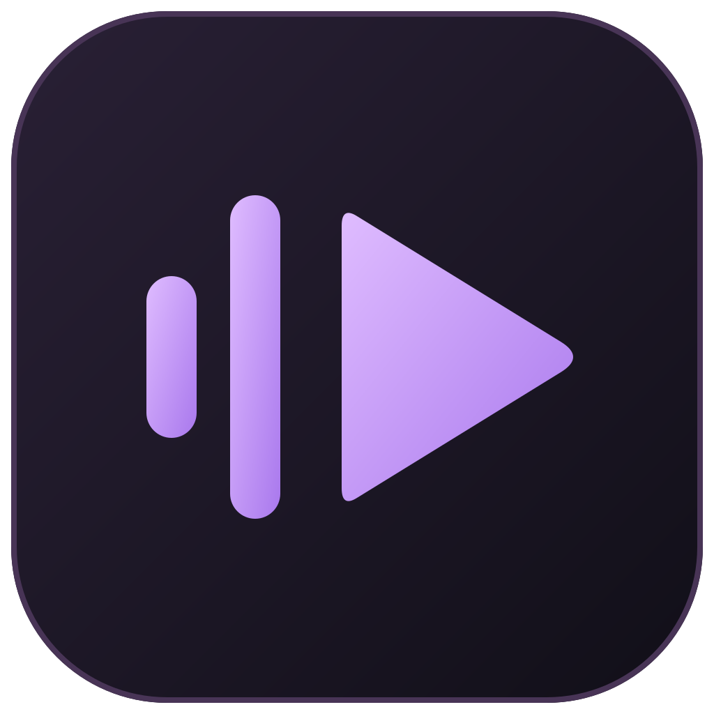
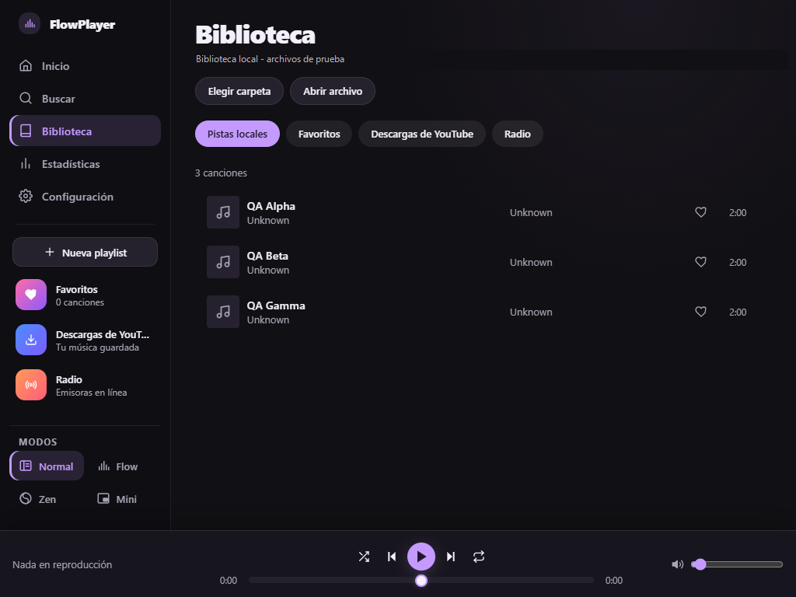
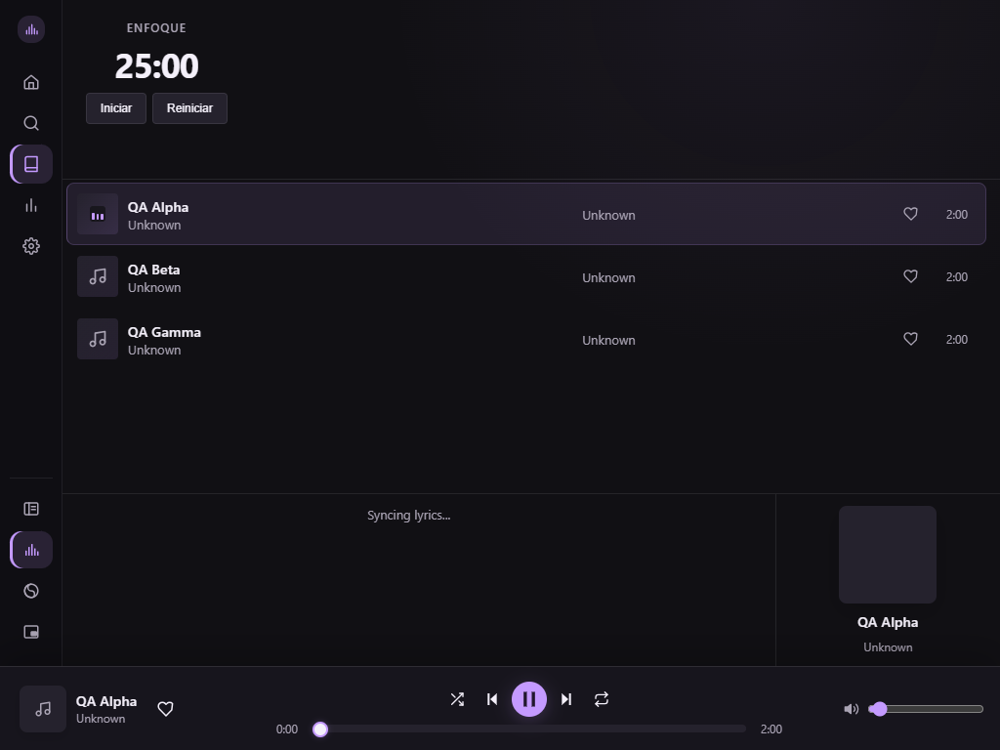
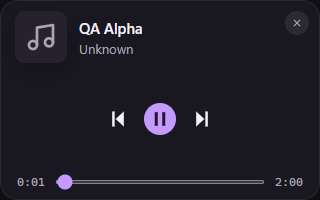

Normal
Biblioteca, búsquedas, favoritos e historial. Todo en su lugar, con un reproductor persistente.

FlowPlayerMúsica local · YouTube · Radio
Una biblioteca para escuchar, descubrir y concentrarte. Cuatro modos de escritorio, sin perder el control de lo que suena.
Tauri 2 + Rust + React. Validación nativa actual en Windows.

Una app, cuatro formas de escuchar
Biblioteca, búsquedas, favoritos e historial. Todo en su lugar, con un reproductor persistente.
Pomodoro, visualizador y letras para acompañar el trabajo. Abrí cualquier sección lateral para volver a Normal.
Menos interfaz, más música. Visualizador y controles esenciales; Escape te devuelve a Normal.
Una tarjeta compacta y opaca para tener pausa, avance y progreso cerca, sin ocupar toda la pantalla.


Tus fuentes, juntas
Explorá tus archivos, guardá favoritos y reproducí colecciones sin mover tu música.
Reproductor oficial flotante o acoplado, cola y autoplay. Zen y Mini pausan el video; no se reproduce oculto.
Emisoras disponibles y tus propias URLs de streaming. La conexión y disponibilidad dependen del proveedor.
Primeros pasos
Para desarrollar en Windows necesitás Node.js 22+, Rust estable MSVC, las herramientas de C++ con Windows SDK y WebView2. La primera compilación puede tardar varios minutos.
git clone https://github.com/FabianGallardo-coder/reproducto_mpn.git
Set-Location reproducto_mpn
npm ci
npm run tauri devDespués, seleccioná tu carpeta en Configuración y reproducí una pista desde Biblioteca.
Documentación
Las guías se mantienen con el código en GitHub. Incluyen uso, datos, arquitectura y los límites de las pruebas.
Requisitos y primera reproducción.
Archivos, favoritos y colecciones.
Video, descargas y emisoras.
Flow, Zen, Mini y teclado.
Preferencias, historial y respaldos.
Arquitectura, IPC e iconos.
Simulación, Tauri real y controles manuales.
Audio, archivos e integraciones.
Wiki y despliegue de este sitio.
No. La reproducción usa el iframe oficial visible. Las descargas son una acción separada, con confirmación, para material propio o autorizado.
La base tecnológica es multiplataforma, pero la validación nativa actual se realizó en Windows. No se presentan los otros sistemas como certificados.
No. Se distinguen pruebas simuladas y nativas. Audibilidad, diálogos, controles del sistema e instalador necesitan comprobaciones manuales.
El repositorio no incluye actualmente un archivo LICENSE. El titular debe establecer la licencia antes de distribuir. Cada dependencia conserva sus propios términos.